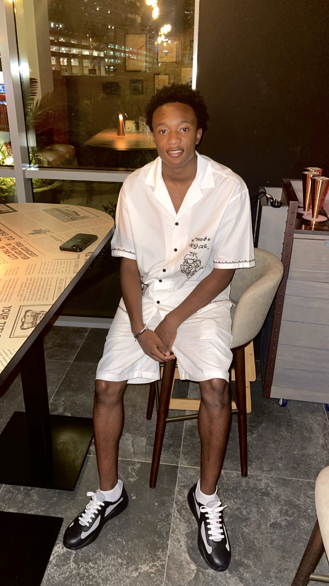
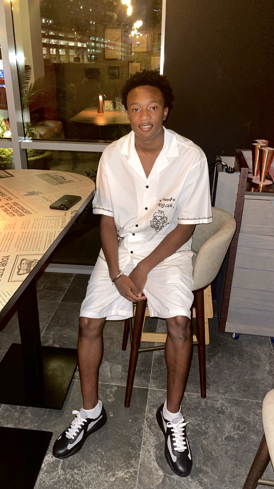

Wie ben ik?
Ik ben Aboubacar Kourouma, 18 jaar, student Software Development aan het Techniek College Rotterdam...
Kennis & Vaardigheden
- HTML, CSS, JavaScript
- Versiebeheer
- Samenwerken in een team
- Leergierigheid
Ik ben Aboubacar Kourouma, 18 jaar, student Software Development aan het Techniek College Rotterdam...
Software Developer – Techniek College Rotterdam
Start: aug 2024
Tijdens mijn opleiding werk ik met technieken zoals: